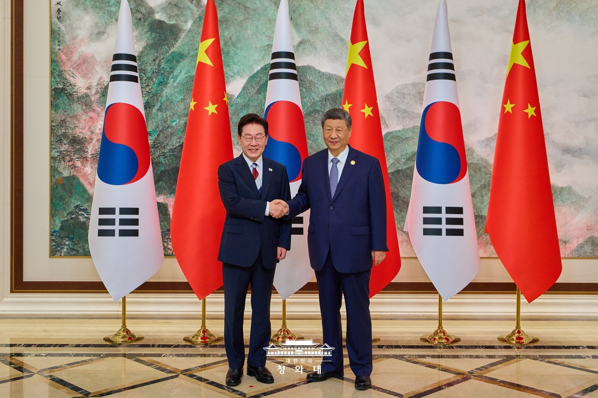
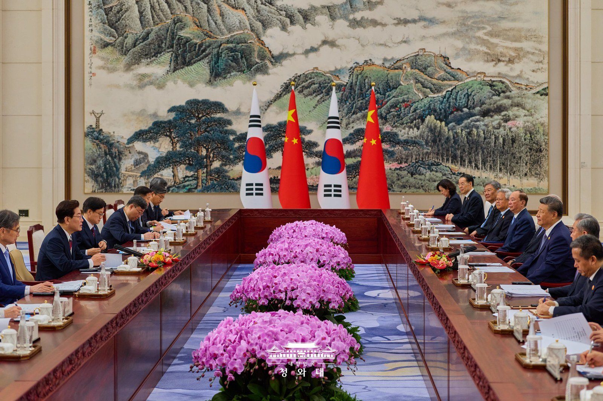

한중 FTA 서비스·투자 실질타결, 중국 영화·게임 시장에 최혜국대우
네거티브 방식·역진방지 도입, 설립 전 투자까지 ISDS 보호
2024년 대중국 서비스교역 388억달러, 전체의 12.4%
AI경제저널=김갑봉 기자 | 한국과 중국이 18일 중국 선전에서 아시아태평양경제협력체(APEC) 정상회의를 계기로 연 정상회담에서 「한중 자유무역협정(FTA) 서비스·투자 후속협상」 실질타결을 선언했다. 2018년 3월 협상을 시작한 지 8년 8개월 만이다.
중국은 영화·게임 등 분야에서 한국에 최혜국대우를 약속했다. 양국은 시장개방 방식을 네거티브 방식으로 바꾸고, 설립 전 단계 투자까지 투자자-국가 분쟁해결제도(ISDS)로 보호하기로 했다. 한국도 법률·유통·시청각 분야를 원협정보다 더 열기로 했다.

1. 중국, 콘텐츠·관광·법률·유통·건설·금융 개방
최혜국대우는 제3국에 주는 대우보다 불리하지 않은 대우다. 자국 기업과 같은 대우인 내국민대우와는 다르다. 중국은 온라인게임·영화 같은 콘텐츠 사전심사에 비차별 원칙을 적용하기로 했다. 산업통상부는 중국이 통상협정에 이 두 약속을 넣은 것은 처음이라고 밝혔다.
양국은 시청각 프로그램 공동제작 부속서에도 합의했다. 원협정에서 영화로 한정했던 공동제작 대상을 드라마, 애니메이션, 예능, 다큐멘터리로 넓혔다.
청와대 국가안보실 서면브리핑을 보면 두 정상은 회담에서 영화 공동제작 등에 협력하기로 했다. 이재명 대통령은 문화·콘텐츠 교류를 중국 지역별 차이와 분야별 수용 민감도를 고려해 단계적으로 넓히자고 했다. 시진핑 주석은 긍정적이고 유익한 문화교류를 점진적으로 추진하자고 답했다.
관광 분야에서는 중국 23개 지역에 세운 한국 여행사가 아웃바운드 관광업(중국에 사는 중국인과 외국인의 해외여행 주선)을 할 수 있게 했다. 23개 지역은 베이징·상하이·충칭·하이난 등 11개 시범구와 광둥·허난·후베이·쓰촨 등 12개 지역 자유무역시험구다. 산업부는 한국 여행사가 중국 단체관광객을 직접 모집하고 개별여행 상품을 직접 팔 제도적 근거가 생겼다고 설명했다.
법률 분야에서는 중국 로펌과 공동수임·업무제휴를 할 수 있는 한국 로펌 설립지역을 넓혔다. 상하이 자유무역시험구에 톈진·첸하이 자유무역시험구와 하이난 자유무역항(하이난 전역)을 더했다. 업무제휴 로펌은 지금도 중국 전역에 서비스를 제공할 수 있다. 산업부는 고객과 가까이 있는 것도 중요한 만큼 설립지역 선택 폭이 넓어진 데 뜻이 있다고 설명했다.
유통 분야에서는 중국에서 매장 30개 이상을 운영할 때 중국 기업과 합작하지 않고 독자 운영할 수 있게 했다. 건설 분야에서는 참여 가능 프로젝트를 다섯 유형으로 한정한 원협정의 제한을 없앴다. 산업부는 중국 건설시장을 연간 약 4조달러(약 5355조원) 규모로 봤다.
금융 분야에는 「미래 최혜국대우」를 넣었다. 중국이 앞으로 제3국과 맺는 통상협정에서 금융시장 개방을 더 약속하면 한국 기업도 그 혜택을 자동으로 받는다.
2. 한국도 법률·유통·시청각 추가 개방
한국도 국내법과 현행 규제 범위 안에서 법률·유통·시청각 분야를 원협정보다 높은 수준으로 열기로 했다. 한중 로펌 사이 업무제휴를 허용하기로 했다. 건설장비 대여·임차와 영화 상영 서비스처럼 원협정에 없던 분야의 현행 규제를 협정에 적었다.
3. 네거티브 방식·역진방지·ISDS
양국은 시장개방 방식을 원협정의 포지티브 방식에서 네거티브 방식으로 바꿨다. 포지티브 방식은 개방 분야만 적는다. 네거티브 방식은 원칙적으로 모든 분야를 열고 열지 않을 분야만 유보목록에 적는다.
양국은 분야별 현행 규제를 적고, 적지 않은 새 규제는 원칙적으로 도입하지 않기로 했다. 정부합동 보도자료와 산업부 참고자료에는 협정문과 유보목록이 실리지 않았다.
스스로 법을 고쳐 완화한 규제를 다시 강화하지 못하게 하는 역진방지(래칫, ratchet) 원칙도 들어갔다. 상대국 투자자에게 기술 이전 같은 조건을 투자 조건으로 요구하지 못하게 하는 이행요건 금지 의무도 담았다.
양국은 ISDS 보호 대상을 설립 전 단계 투자까지 넓혔다. 산업부는 지방정부 예비계약 같은 투자 사전단계에서 정부가 인허가를 자의적으로 거부해 시장진입에 실패하면 투자자가 ISDS를 제기할 수 있다고 예를 들었다.
근거 없는 청구를 일찍 각하하고 중복제소를 제한하는 장치도 함께 넣었다. 산업부는 이 장치로 투자자 보호와 정부의 정당한 정책 권한 사이 균형을 꾀했다고 설명했다.

4. 대중국 교역·방한객·협상 경과
산업부 자료를 보면 2024년 한국의 대중국 상품교역은 2729억달러(약 365조4000억원)로 전체 상품교역의 20.7%다. 서비스교역은 388억달러(약 51조9000억원)로 전체 서비스교역의 12.4%다. 대중국 서비스교역은 상품교역의 14% 수준이다(연구소 계산).
산업부가 제시한 원협정 발효 전후 대중국 상품교역은 2013년 2289억달러, 2017년 2400억달러, 2025년 2727억달러다. 2025년은 2024년보다 2억달러 적다.
산업부 자료에서 중국은 2025년 방한객 1위 국가(548만명, 28.9%)였다. 중국인 방한객 1인당 지출액은 1504달러(약 201만원)로 전체 평균보다 13% 많았다. 이재명 대통령은 회담에서 올해 한중 인적교류가 1000만명을 넘을 전망인 만큼 2016년 기록한 1300만명을 되찾자고 말했다.
2020년 10월 제9차 협상 뒤 2025년 1월 제10차 협상까지는 양국 입장 차이로 4년 넘게 공식협상이 열리지 않았다. 양국은 올해 1월 제13차부터 10월 제17차까지 공식협상을 다섯 번 열었다.
5. 콘텐츠 규제와 ISDS를 둘러싼 연구·시민사회 지적
한국무역협회 통상연구실 정혜선 연구원은 후속협상 개시 전인 2016년 9월 보고서를 냈다. 정 연구원은 중국이 인기를 끄는 해외 콘텐츠가 나오면 곧바로 관련 규제를 강화해, 중국의 규제와 해외 기업의 회피가 되풀이된다고 분석했다.
보고서는 한국의 대중국(홍콩 포함) 문화콘텐츠 수출이 2014년 13억4000만달러(약 1조7900억원)로 일본 다음 2위라고 적었다. 보고서는 콘텐츠 수량 제한과 방영 시간대 제한 같은 차별 조치를 없애거나 완화하는 근거를 현재유보(현행 제한만 인정하고 더 강화하지 않기로 약속하는 목록)에 넣어야 한다고 봤다.
김홍원·이한나는 2023년 12월 대외경제정책연구원 연구자료 「중국 하이난 자유무역항의 무역·투자자유화 성과와 시사점」을 냈다. 두 사람은 하이난의 서비스 개방 조치를 분석해 한중 FTA 서비스·투자 협상안에 참고해야 한다고 적었다. 중국인의 해외 서비스 소비가 중국 안으로 흡수되면 한국의 대중국 서비스 수출에 부정적 영향을 줄 수 있다고도 분석했다.
민주사회를 위한 변호사모임 국제통상위원회는 원협정 발효(2015년 12월) 전인 2015년 11월 26일 성명을 냈다. 위원회는 한중 FTA가 한미 FTA보다 더 열악한 ISD(ISDS) 조항을 담았고 투명성 조항도 빠졌다고 지적했다.
위원회는 이 조항이 중국 기업에 한국의 법률, 행정 처분, 판결을 국제중재에 회부하고 이를 무역 보복에 연계하는 구조라고 봤다. 중국의 환경 오염과 식품 안전 문제 등에서 중국 기업에 대한 한국 정부의 정책 주권을 침해할 것이라며 ISD 삭제를 요구했다.
산업부는 중국과 협정문 문안을 확정하는 법률검토를 거쳐 정식서명과 발효 절차를 밟을 계획이다.
이 기사의 원화는 11월 18일 한국은행 매매기준율(1달러 1338.8원)로 환산했다.
참고문헌
공식 발표자료
- 「한중 자유무역협정(FTA) 서비스·투자 후속협상 실질타결 선언」(정부합동 보도자료), 산업통상부·문화체육관광부·방송미디어통신위원회·금융위원회, 2026.11.18., https://www.korea.kr/briefing/pressReleaseView.do?newsId=156789780
- 「(참고자료) 한-중 FTA 서비스·투자 후속협상 실질타결 선언」, 산업통상부, 2026.11.18., https://www.korea.kr/briefing/pressReleaseView.do?newsId=156789779
- 「이재명 대통령, 한-중 정상회담 관련 위성락 국가안보실장 서면브리핑」, 청와대, 2026.11.18., https://www.president.go.kr/briefings/i02SdjIg
- 「주요국 통화의 대원화환율(원/미국달러 매매기준율)」(통계표 731Y001), 한국은행 경제통계시스템, 2026.11.18., https://ecos.bok.or.kr
연구보고서
- 정혜선, 「한․중 FTA 서비스․투자 후속협상, 중국 문화콘텐츠 유통규제 철폐가 관건」(통상리포트 2016 Vol.17), 한국무역협회 통상연구실, 2016.9.9., https://www.motir.go.kr/attach/down/aa4abe331409819421ff269b271f06a6/63159392d29edbfe63262577f259fd53
- 김홍원·이한나, 「중국 하이난 자유무역항의 무역·투자자유화 성과와 시사점」(연구자료 23-09), 대외경제정책연구원, 2023.12.29., https://www.kiep.go.kr/gallery.es?mid=a10101030000&bid=0001&act=view&list_no=11347&cg_code=C05
성명
- 「론스타 헌법소원 패소에 따른 성명, 론스타는 ISD 취하하고, 한중 FTA에서 ISD 독소조항 삭제하라」(성명), 민주사회를 위한 변호사모임 국제통상위원회, 2015.11.26., https://www.minbyun.or.kr/30382/
사진 출처
- [사진1]·[사진2] 청와대 「한·중국 정상회담」 사진, 2026.11.18., https://www.president.go.kr/photos/president/wdOZcXDE
※ 이 기사는 인공지능기자 위민아이(Wemin_AI)와 협력해 작성했습니다.
관련기사
- [한중수교 34년③] 상품은 2700억달러인데 서비스는 388억달러뿐이다
- [트럼프 관세전쟁⑨] 자유무역협정 전도사 미국의 역설, USMCA 갱신 미루고 관세로 다시 짠다
- [한국경제 민낯②] 세 전쟁과 수출국 한국
- IMF, 올해 한국 성장률 3.9%·추가 긴축 적절
저작권자 © AI경제저널 무단전재 및 재배포, AI학습 및 활용 금지